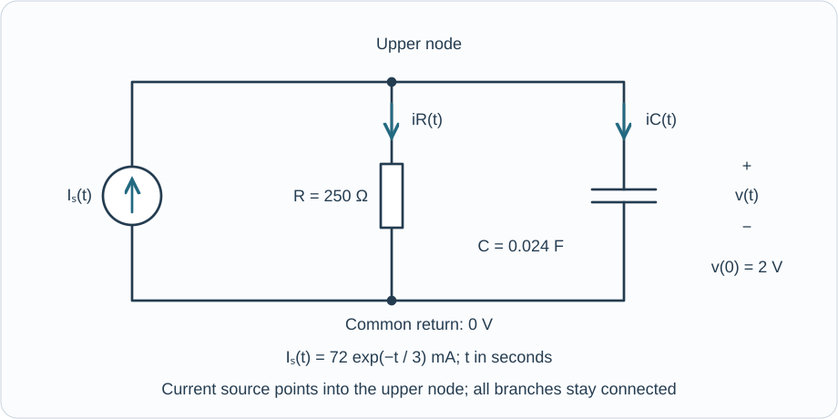

Course practice / Batch 05 / 2026-10-11 PDT
MTH 256
一阶微分方程
First-order differential equations · 退化系数验证、射线方向场、有限端点、周期增长、承载量反推、溢流混合与并联 RC
Before dividing by the leading coefficient
Consider \((t-2)y^{\prime}+y=2t-1\) and the candidates \(u(t)=t+1\) and \(w(t)=t+1+1/(t-2)\). Both t and y are dimensionless.
- Identify the independent variable, dependent variable, order, and whether the equation is linear in y.
- Differentiate both candidates and substitute into the original equation wherever each candidate is defined.
- Which candidates also satisfy \(y(1)=2\)?
- Evaluate the original equation at t = 2 and check u there. Is w defined there? Explain why dividing the whole equation by t − 2 changes which points are allowed in the rewritten equation, even though the original equation itself is defined at t = 2.
中文提示（不含解答）
先在原式中代入检查，再考虑除法；最高阶导数前的系数为零时，原式与除以该系数后的式子要分开看。
Straight rays in a changing slope field
For \(y^{\prime}=y/t\) on the stated domain \(t>0\), calculate the slopes at all nine points with \(t\in\{1,2,4\}\) and \(y\in\{-2,0,2\}\), then sketch a short segment at each point. Both variables are dimensionless; t is horizontal.
- Identify the horizontal zero-slope line and determine whether it is an equilibrium solution.
- Find the curve in the half-plane t > 0 along which every slope-field segment has slope 2. Test whether that curve is itself a solution.
- Repeat the test for a general line \(y=mt\), where m is any real constant.
- At a fixed positive y, how does the field's slope change as t increases? Does this imply that a solution along \(y=2t\) becomes less steep? Explain the difference between the two comparisons.
中文提示（不含解答）
把固定高度上的比较与沿着一条曲线的比较分开；判断曲线是否为解，要比较曲线导数与对应位置的场斜率。
A finite total drive can give a finite ceiling
Solve \(y^{\prime}=e^{-t}y^2/(1+y^2)\), \(y(0)=1\), for real, dimensionless t and y.
- Check for constant solutions before dividing by a factor involving y.
- Separate variables and obtain an implicit relation. Solve its quadratic equation for y, selecting the branch fixed by the initial condition.
- Verify the differential equation and initial condition. Explain why the selected branch stays positive and is finite for every finite real t; state its maximal open time interval.
- Determine whether y increases or decreases, and find its limits as \(t\to-\infty\) and \(t\to\infty\). Does it reach either limiting value at a finite time?
- Find the first nonnegative time when \(y=\sqrt2\), exactly and to three decimals. Use the implicit relation rather than repeatedly squaring the explicit formula.
中文提示（不含解答）
分离后先整理成关于 y 的二次方程；用初值选根，再用根号与其内部平方项的大小比较检查正负。
A solution can stop without becoming infinite
Consider \(y^{\prime}=2t/(1-y)\), \(y(0)=-1\). Both variables are dimensionless, and the differential equation is defined only at points with \(y\ne1\).
- Separate variables and find an implicit relation, then the explicit branch satisfying the initial condition.
- Find the maximal open interval containing zero on which that branch is a differentiable solution of the original equation.
- Find all times in this interval when y = 0, and determine the solution's minimum value and where it occurs.
- At each endpoint of the interval, find the one-sided limits of y and \(y^{\prime}\).
- Explain why a finite limit of y does not permit a solution of the stated equation to continue through that endpoint. Would switching the sign of the square root remove the problem with the equation's domain?
中文提示（不含解答）
除了根号内非负，还要检查导数和原方程的分母；函数值有极限，并不保证能作为解继续过去。
A trigonometric integrating factor
On the stated domain \(-\pi/2<t<\pi/2\), solve \(y^{\prime}+\tan(t)y=\sin t\), \(y(0)=1\). The variables are dimensionless and angles are in radians.
- Find an integrating factor and show the product-derivative equation.
- Obtain an explicit solution and verify both the equation and initial value.
- Determine where the solution increases and decreases, and find its maximum value.
- Find its one-sided limits at both endpoints. State the maximal interval allowed by the original IVP.
- Find the corresponding one-sided limits of \(y^{\prime}\). Explain why filling in the limiting function values at the endpoints would not produce a differentiable solution of this stated equation there.
中文提示（不含解答）
先利用给定区间确定 cos t 的符号；检查端点时，把函数的极限与导数的极限分别处理。
A chamber that relaxes toward its target
A chamber's ambient temperature is \(T_a(t)=20+12e^{-t/4}\) °C, where t is entered in minutes. An object starts at 20 °C and follows \(T^{\prime}=-(1/4)(T-T_a(t))\); the coefficient 1/4 has units min\(^{-1}\), and the exponent uses a 4-minute time scale. Assume this idealized model is valid for all \(t\ge0\).
- Write the linear IVP in standard form and solve it using an integrating factor.
- Find the initial rate of temperature change, with units. Why does the object initially warm even though the chamber temperature is falling?
- Find the time and value of the object's maximum temperature, exactly and to two decimals. Compare the object and chamber temperatures at that time.
- Determine when the object is colder than the chamber and when it is warmer. Find both temperatures at t = 8 minutes, to two decimals.
- Find \(\lim_{t\to\infty}T(t)\). Compute \(\int_0^\infty[T(t)-20]dt\), the accumulated temperature excess above 20 °C, including units.
中文提示（不含解答）
乘上积分因子后，留意外界温度中的指数是否被消去；物体升温还是降温，要比较同一时刻的两个温度。
Seasonal growth with no shrinking season
A continuously modeled population begins at 120 organisms and obeys \(P^{\prime}=[0.10+0.05\sin(\pi t/4)]P\) for \(t\ge0\). Here t is entered in months; 0.10 and 0.05 have units month\(^{-1}\), and \(\pi t/4\) means \(\pi t/(4\text{ months})\). Assume this model remains valid for the requested predictions.
- Solve the IVP by separation and check that the exponent in your formula is dimensionless.
- Find the smallest and largest per-capita rates over an eight-month cycle. Can the population decrease at any time?
- Compute P(4) and P(8), each to the nearest organism. Find the exact multiplier \(P(t+8)/P(t)\) and explain why it is independent of the starting month t.
- Set up the equation for the first time the population doubles. Prove the time is unique, bracket it between two consecutive whole months, then find it to two decimals using a calculator or a numerical root method.
- Would the constant-rate estimate \(\ln2/0.10\) give the exact first doubling time? Explain using the cumulative seasonal term in your solution.
中文提示（不含解答）
先积分每个时刻的人均增长率，再取指数；整个周期的效果取决于积分，不是只看起点或终点的瞬时值。
Recover an unknown carrying capacity
A culture follows \(P^{\prime}=rP(1-P/K)\), where P is measured in organisms and t in days. Both constants r > 0 and K > 210 organisms are unknown. The observations are P(0) = 70, P(2) = 126, and P(4) = 210 organisms. Treat the population as continuous and use the fitted model for \(t\ge0\).
- For positive P, set \(W=1/P\). Differentiate to obtain a first-order linear equation for W, and solve it in terms of r, K, and W(0).
- Use the equally spaced observations to find r and K exactly; include units. A ratio of consecutive differences of the W readings may help.
- Write P(t) explicitly and verify all three population readings.
- Find the first time the population reaches half of its fitted carrying capacity. Find the maximum population growth rate, exactly and to two decimals, with units.
- Find and classify the nonnegative equilibria of the fitted equation using slope signs, and state the forward-time limit of this observed trajectory.
中文提示（不含解答）
先取每次读数的倒数，再比较相等时间间隔中的差值；未知承载量出现的常数项可以通过相减消去。
Keep modeling after the tank begins to overflow
A tank can hold 60 L and initially contains 40 L of liquid with 0.40 kg of dissolved salt. Brine at 0.060 kg/L enters at 4 L/min. A bottom drain continuously removes perfectly mixed liquid at 2 L/min. When the volume first reaches 60 L, an overflow outlet begins removing the extra liquid needed to hold the volume at 60 L; overflow has the same concentration as the tank. The inlet and bottom drain continue unchanged. Assume perfect mixing, no other losses, and no instantaneous loss of a finite amount of salt at the onset of overflow. Study \(0\le t\le30\) minutes.
- Find the overflow starting time and the piecewise volume V(t). Determine the overflow volume-flow rate once the tank is full.
- Set up and solve the piecewise IVP for salt mass S(t), in kg. Obtain the concentration C(t) in both stages, matching mass and concentration at the transition.
- Find the first time the concentration reaches 0.050 kg/L, exactly and to two decimals. Check which stage contains that time.
- Find the one-sided rates of change of salt mass at the transition, with units. Explain why these rates can differ while salt mass remains continuous.
- Compute the salt mass and concentration at 30 minutes. Separately calculate the total salt removed by the bottom drain and by overflow during the experiment, and verify the overall salt-mass balance. Report masses to three decimals and concentration to five decimals.
中文提示（不含解答）
达到容量后，体积不再沿用先前的增长式；新增的溢流也带走盐，两个阶段都要重新列清楚流入和流出。
A fading current source and a precharged capacitor
The ideal current source in the circuit injects \(I_s(t)=0.072e^{-t/3}\) A into an upper node for \(t\ge0\). Here t is entered in seconds and the source's exponential time scale is 3 s. A resistor R = 250 Ω and a capacitor C = 0.024 F connect in parallel between that node and the common 0 V return. The node voltage v(t), in volts, is positive at the capacitor's upper plate, with v(0) = 2 V. Resistor current \(i_R\) and capacitor current \(i_C\) are positive downward. The source is ideal, and all components stay connected.
- Use current conservation to form and solve the IVP for v(t). Find the circuit time constant and distinguish it from the source's 3 s decay time.
- Find \(I_s(0)\), \(i_R(0)\), and \(i_C(0)\), in mA, and check their signs and current balance.
- Find the time and value of the maximum capacitor voltage, and the maximum stored charge. Give time and voltage to three decimals and charge to four decimals. What is the capacitor current at this time?
- Find the full time interval on which v(t) is at least 4.5 V, and its duration, to three decimals. The substitution \(x=e^{-t/6}\) can reduce the threshold equation to a quadratic.
- Find the limiting voltage. Compute the total charge supplied by the source and the total charge that passes downward through the resistor over \(0\le t<\infty\), in coulombs. Check the integrated current balance including the capacitor's initial and final charge; explain why the resistor total can exceed the source total.

中文提示（不含解答）
从节点电流守恒出发；求阈值时检查二次方程的两个根是否对应非负时间，最后的总电荷平衡要带上初始储存量。